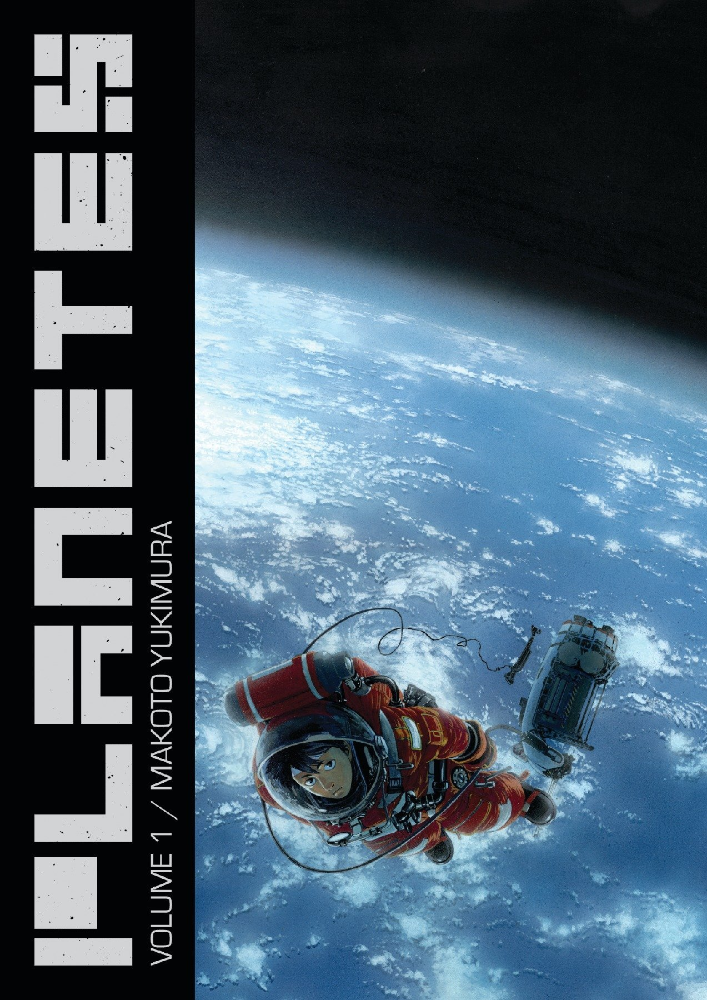
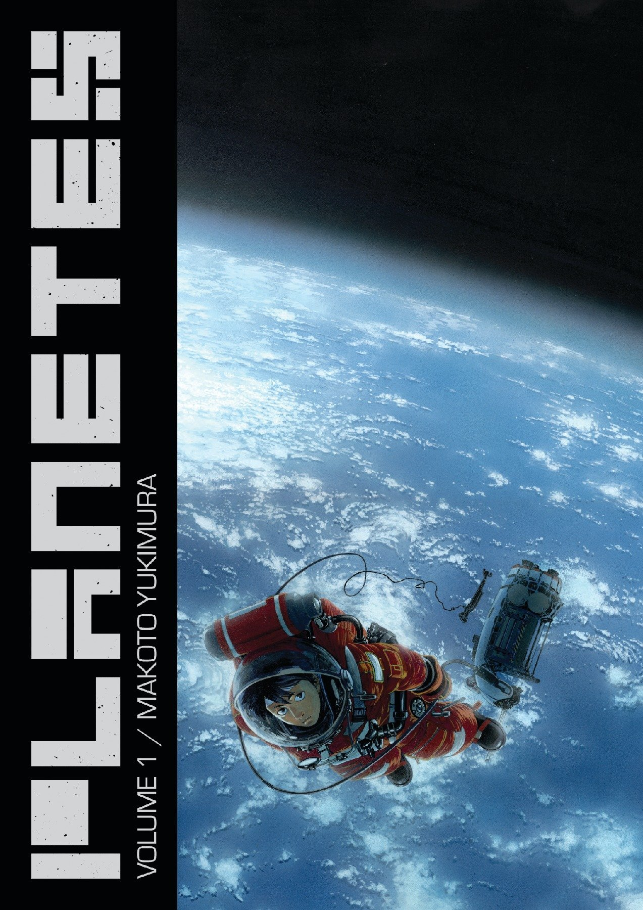

Meu nome é José Mota, nasci em 1999 e sou apaixonado por livros, principalmente os que remetem a mundos imaginários e coisas que não existem na vida real. Essa minha paixão por livros começou quando eu tinha apenas 12 anos, passei por uma situação traúmatica e pra mim ler esse tipo de livro me tirava um pouco da realidade e me levava pra outro lugar, conheci esse mundo quando li Senhor dos Anéis pela primeira vez, por mais que o tipo de leitura fosse um pouco antigo e parado eu não consegui parar de ler até terminar o livro, e depois disso a minha vida mudou, pois começei a me interessar mais por esse tipo de conteúdo, depois disso recebi um convite do meu irmão para jogar RPG de mesa com ele, o RPG de mesa nada mais é do que um jogo de interpretação e imaginação, onde um mestre cria uma estória e os jogadores criam personagens para interpretar e viver essa estória, sendo que nem sempre ela vai sair como o mestre planejou e nisso que entra a imaginação e criatividade, pois na maioria das vezes nada sai como o planejado e o decorrer da estória vai de acordo com o que os jogadores querem fazer.
Quando eu fiz 16 anos já jogava RPG com alguns amigos além do meu irmão e os amigos deles, sendo assim acabei fazendo várias amizades que levo até hoje, fora os ensinamentos sobre nunca desistir, confiar nas pessoas que estão comigo e também ser sempre persistento quando quero concluir algum objetivo, mesmo que a jornada para alcança-lo seja árdua, é importante sempre persistir e ser resiliente, que mesmo que demore, nada no mundo é inalcançavel!


A grande característica que todos esses livros tem em comum é que eles se passam em mundo distópicos, embora o Jogador Número 1 e o Reflexo na Escuridão tenham características muito parecidas com o mundo real, eles se passam em mundos fantasiosos e com coisas que fogem muito da realidade que estamos acostumados, já o Senhor dos Anéis foge completamente de tudo, pois nele temos um mundo completamente fantástico e fora da realidade, ambos o livros me influenciaram muito por ter ensinamentos de ajudarmos o próximo e ser resiliente mesmo quando parece que tudo está perdido.
 

Um pouco diferente dos livros os mangás representam outro tipo de representação artística, além de chamar muito mais atenção para as artes do que para os textos ele consegue expressar, na minha opinião, muito mais os sentimentos e coisas que os protagonistas estão sentindo, seus medos e inseguranças, e tambêm mais alguns sentimentos como solidão, angústia. É algo muito mais claro de sentir e interpretar do que em livros, pois como está tudo ilustrado eu consigo saber exatamente como os personagens estão se sentindo só por olhar a expressão deles.
Respeito é primordial para qualquer tipo de relação e interação pois se você não consegue respeitar o próximo, quem dirá que você consegue respeitar a si mesmo, pois se não possuimos a capacidade de respeitar o próximo, independente de qualquer coisa, não conseguimos olhar para nós mesmos com o respeito que merecemos.
Humildade representa para mim sempre não julgar os outros e também ter a maturidade e atitude para assumir meus próprios erros, além disso, também representa a igualdade entre todo mundo, ou seja, nunca diminuir ninguém e também nunca me achar melhor que ninguém, pois todos nós temos sempre que manter o respeito para com qualquer pessoa e também no ambiente que vivemos e convivemos.
Resiliência para mim é a força de vontade de nunca desistir independente das adversidades e dos desafios que encontramos no nosso caminho, é sempre ter a visão de que mesmo que as coisas estejam muito difíceis devemos sempre olhar a situação com o olhar mais otimista possível, e também que nada é impossível, só precisamos de força de vontade e planejamento, que conseguimos realizar praticamente todos os nossos sonhos!